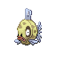
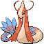

En la mundialmente famosa saga de Pokémon, no solo existen criaturas que desafían las leyes de la física, sino que también existen plantas con características igual de fantásticas

En la mundialmente famosa saga de Pokémon, no solo existen criaturas que desafían las leyes de la física, sino que también existen plantas con características igual de fantásticas

Estamos hablando de las Bayas, una mecánica que fue introducida a los juegos desde sus primeros años de vida por ahí de 1999 en Pokémon Oro y Pokémon Plata, y desde entonces no ha hecho más que evolucionar
A lo largo de los años se ha ido aumentando el número de Bayas que se pueden encontrar en el Mundo Pokémon, llegando a alcanzar la cifra de 67 Bayas diferentes, con difrerentes propósitos cada una


El principal propósito de las Bayas es, apropiadamente para Pokémon, el usarlas en Batalla, durante un combate Pokémon, un Pokémon puede llevar consigo objetos que le ayuden en combate, y de esos, los más abundantes son las Bayas, desde fortaleces sus estadísticas de combate cuando se encuentren bajos de vida, hacer que resistan un ataque que normalmente no resistirían, o solo curarles un poco la vida, las Bayas son objetos que, de usarse con preparación y estrategia, pueden ser la clave para una victoria
Pero no todo son combates, un aspecto de los juegos, bastante olvidado a este punto, son los concursos, por ahí de inicios de los 2000, los desarrolladores de Pokémon quisieron explorar con diferentes formas en las que podrías competir contra Jugadores o NPCs en el juego, y una de esas fueron los concursos, donde en vez de usar movimientos para atacar y debilitar a tu oponente, los usas para impresionar a unos jueces controladors por el juego, todo mientras otros 3 oponentes intentan hacer lo mismo con sus Pokémon, encadenando movimientos para atraer la atención del público, o perjudicar a los rivales


Los concursos no fue algo que durara mucho, con solamente cuatro juegos teniendolos, dos de los cuales son remasterizaciones de los otros dos, aunque algo a destacar, y es lo que nos concierne, es que, de la misma forma que en los combates normales un Pokémon tiene estadísticas de combate, en los concursos un Pokémon tiene estadísticas de concursos, las cuales ayudan a que se desepeñe de mejor manera en ellos, estas estadísticas son para las cuales las Bayas son también útiles, dado a que la forma de aumentar estas estadísticas es alimentando a tu Pokémon con pequeños snacks hechos con Bayas, y la creación de estos alimentos es, como mínimo, confusa.
Existen 5 estádisticas de concurso: Carisma, Belelza, Dulzura, Ingenio y Dureza, las cuales corresponden a los 5 sabores que pueden tener en diferentes niveles las Bayas: Picante, Seco, Dulce, Amargo y Ácido, parece sencillo, alimentale los sabores que quieres y listo, o al menos así sería de no ser por la Estadística de Brillo, la cual sirve como un límite de cuánto puede comer un Pokémon, según como se hagan los alimentos estos tendrán diferentes niveles de sabor y masa, esta última siendo la que aumenta el brillo, por lo que si alguien quisiera tener a un Pokémon con la mayor cantidad de estadísticas de concurso, a la par que el menor brillo posible, necesitaría saber qué resultados obtendria al combinar ciertas bayas para hacer alimentos antes de dedicar su tiempo a conseguir todos los recursos necesarios dentro del juego, y exactamente para eso es está página


Aquí podrás encontrar herramientas para crear los alimentos creados con bayas, los PokeCubos para los juegos Pokémomn Rubí, Zafiro y Esmeralda, los Pokochos para Pokémon Diamante, Perla, Platino, y sus remakes para Nintendo Switch, Diamante Brillante y Perla Reluciente, así como los PokeCubos de Pokémon Rubí Omega y Zafiro Alfa, que aunque se llamen igual se crean y funcionan diferente a los otros PokeCubos, además de ser más sencillos de usar, aumentando solo una estadística según el color correspondiente
Adicionalmente, algo que no se puede evitar mencionar a la hora de hablar de estadísticas de concurso, es el Pokémon Feebas, quien no solo es un Pokémon exageradamente raro de encontrar, sino que también es el único Pokémon que puede evolucionar por medio de sus estadísticas de concurso, necesitando el máximo de 255 puntos de Belleza para evolucionar el Milotic, siendo esta otra de las razones por las que la gente suele requerir saber cómo crear PokeCubos o Pokochos de forma eficiente

